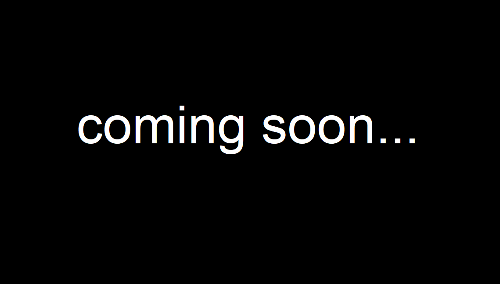
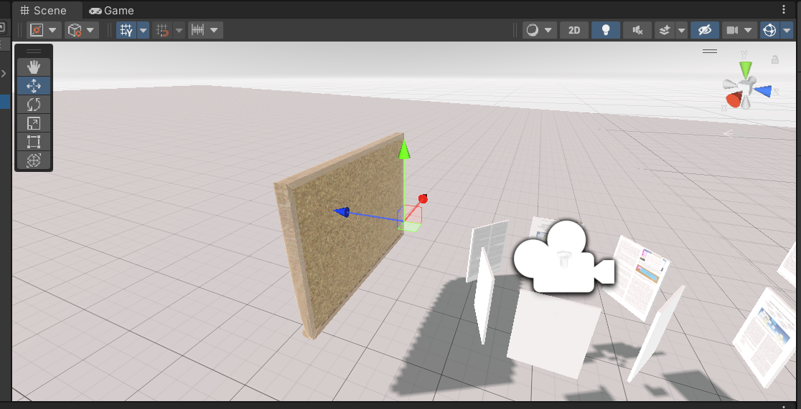
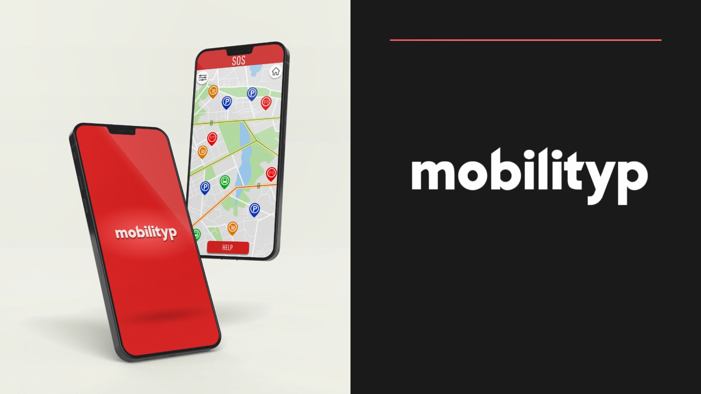
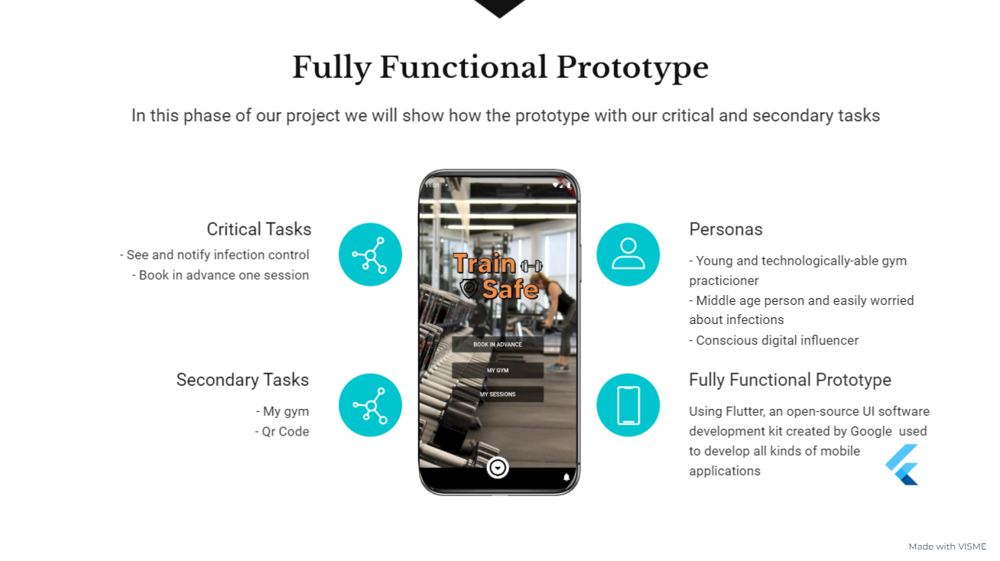
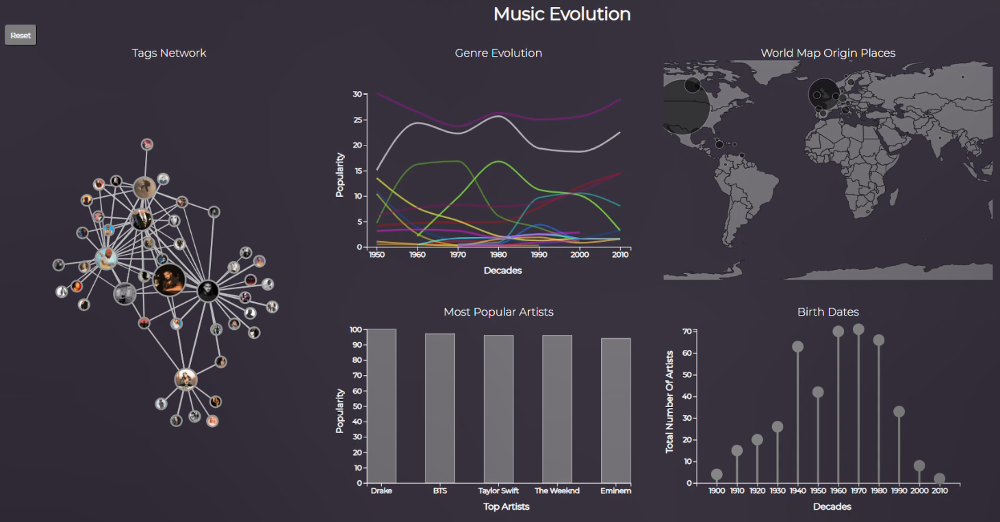

Bernardo Gonçalves de Faria is a Computer Engineer graduated from Instituto Superior Técnico in Lisbon, Portugal. He holds a Bachelors Degree in Computer Science and Engineering, and a Masters Degree in the same area, where he specialized in two fields: Interaction and Visualization, where he explores concepts of User-Centered Design and Evaluation, Virtual Reality and InfoViz, and Intelligent Systems where he learned concepts of Deep Learning, Multi-Agent Systems and Intelligent Decision Making.
He awaits the publication of a scientific article with relevance in the field of health and virtual reality technology, intending to contribute in the future to more innovative projects in the most diversed areas of Engineering and Information Technology.
Projects
...

...
...
Virtual Reality

Virtual Workspace
A VR tool that allows interaction (writing, highlighting, connections) with and within text documents in a virtual environment.
Interaction Design Studio

mobilityp
A high-fidelity prototype of a mobile application for an inclusive technological solution for handicapped people that need to use a wheelchair, featuring (1) a big SOS button that automatically calls for an emergency number, (2) report occurrences, such as a car wrongly parked on a low mobility parking, and send the information through the application to the authorities, and (3) "Mobility Map", a map with pins for easy access to public transportation, low mobility parking or accessibility problem.
Interaction Design Studio
bitloaner
A high-fidelity prototype of a mobile application of new forms of interaction for decentralized finances, allowing users to (1) check their own loans, (2) ask for an amount from other users based on a trust ranking, (3) invest, and (4) track their own personal status.
User-Centered Design and Evaluation

trainSafe
A mobile application for gym users during the pandemic, allowing them to (1) report if they got infected with COVID-19, (2) book gym slots to avoid mass gatherings, and (3) a profile page with personal progress, training plans and virtual identification to enter the gym.
Information Visualization

Music Genres And Associated Bands
An interactive and visual framework that presents information about the evolution of several music genres (evolution over time, its origins, popularity, most famous artists, geographic distribution) through six graphical idioms that interact within themselves.
Scientific Activities
Thesis